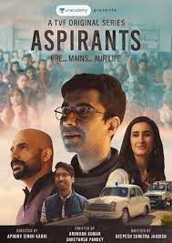
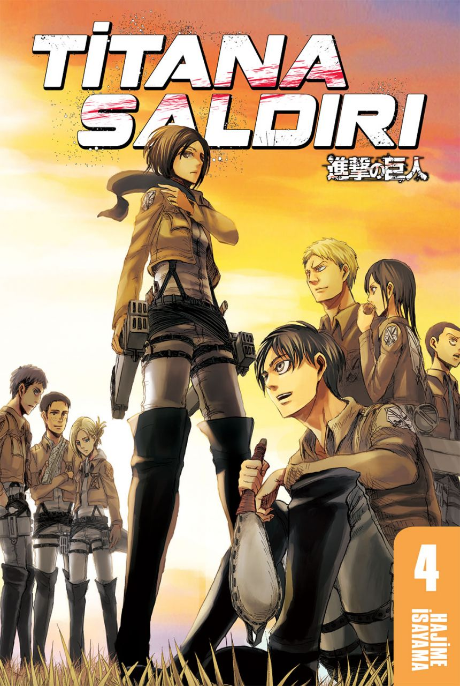
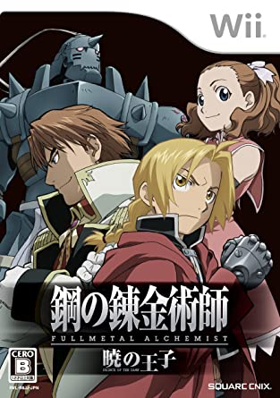
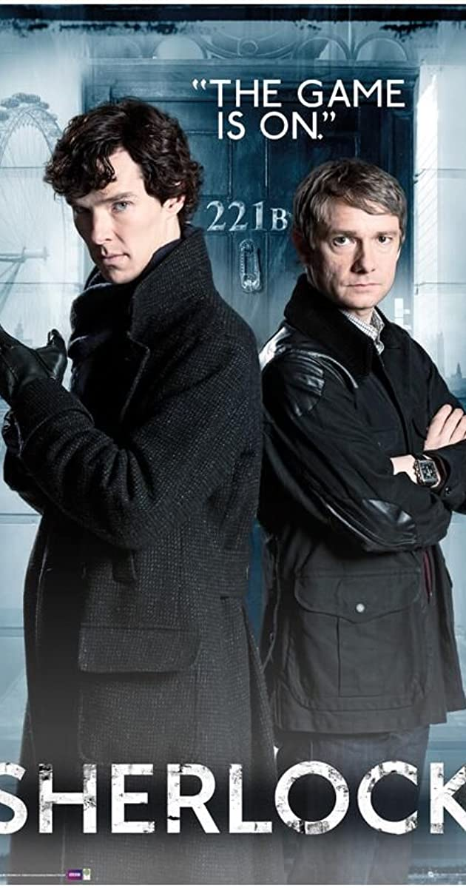
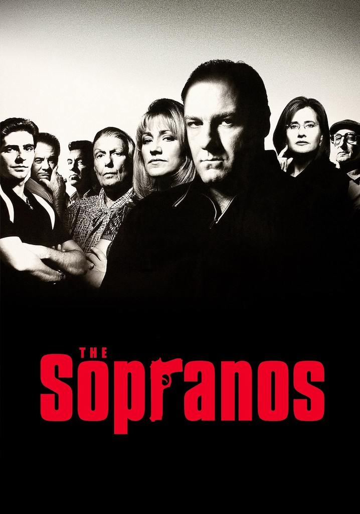
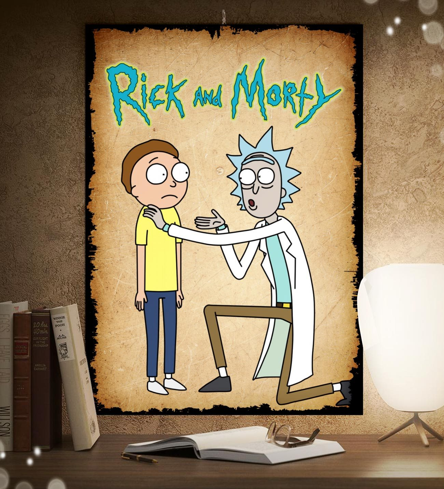
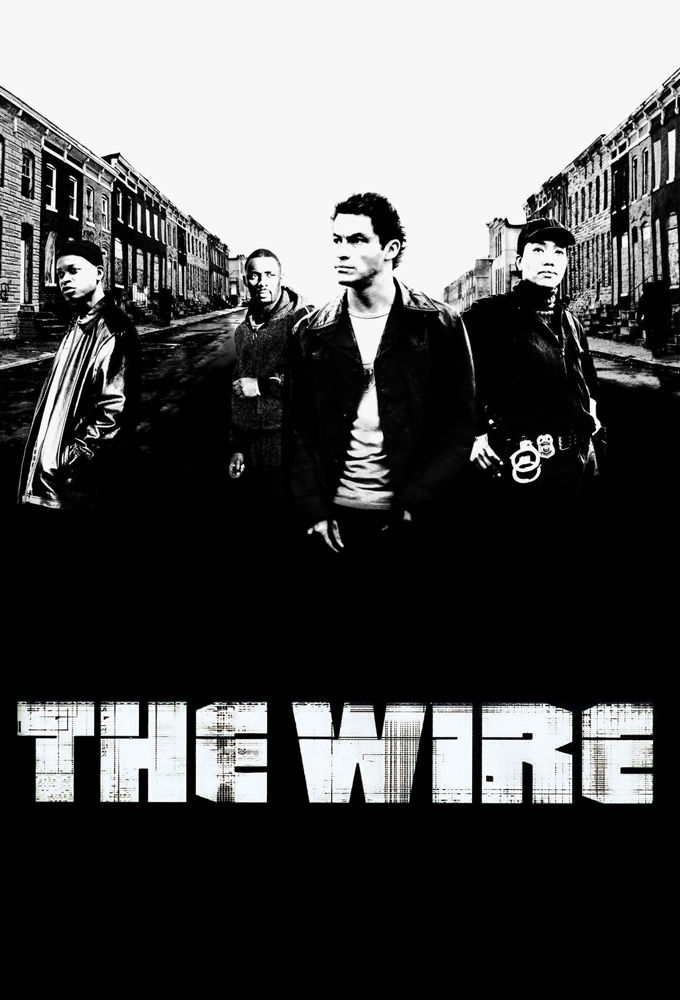
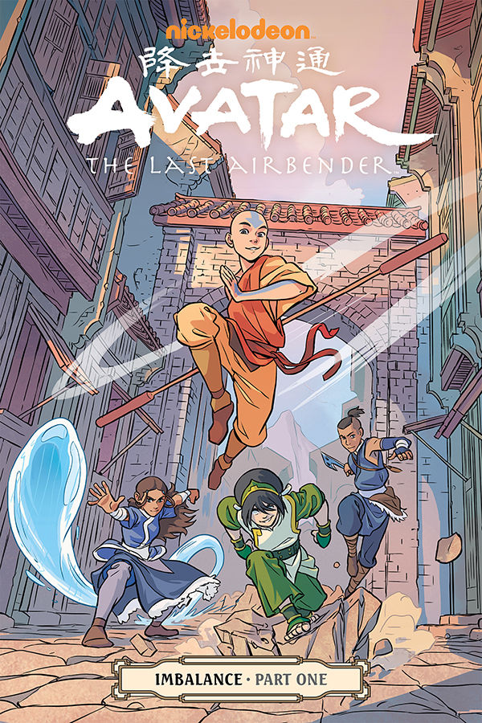
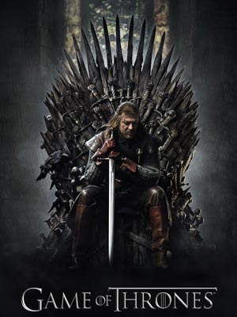

IMDB listesinde yer alan ilk 10 diziye hep birlikte bakalım.
IMDB Top 10 Dizi
10 - Aspirants
Aspirants, Arunabh Kumar tarafından yaratılan The Viral Fever (TVF) tarafından hazırlanan bir web dizisidir. Deepesh Sumitra Jagdish
tarafından yazılan ve Apoorv Singh Karki tarafından yönetilen filmde
Naveen Kasturia, Shivankit Parihar, Abhilash Thapliyal,
Namita Dubey ve Sunny Hinduja yer alıyor. Hikaye, Delhi, Rajnder Nagar'da UPSC sınavına hazırlanan üç arkadaşı, Abhilash, Guri ve SK'yi
(Shwet Ketu) anlatıyor.
9 - Titana Saldırısı
Titana Saldırı Hajime Isayama tarafından çizilen bir manga serisidir. Seri Kodansha'nın Bessatsu Shōnen Magazine adlı aylık manga dergisinde 9 Eylül 2009 tarihinde yayınlanmaya
başlamıştır ve Ağustos 2018 itibarıyla 26 cildi çıkmıştır
8 - Çelik Simyacı
Çelik Simyacı, Hiromu Arakawa tarafından yazılan ve çizilen bir Japon manga dizisidir. Ağustos 2001 ile Eylül 2010 arasında Square Enix’in Aylık Shonen Gangan dergisinde yayımlanmış, daha sonra bu bölümler
bir araya getirilerek 27 tankōbon cildi halinde yayımlanmıştır.
7 - Sherlock
Sherlock, Mark Gatiss tarafından televizyon için geliştirilen Sir Arthur Conan Doyle'ın aynı adı taşıyan romanlarına dayalı Britanya televizyon dizisi. Dizinin 90 dakikalık ilk bölümü 25 Temmuz 2010 günü
BBC One televizyon kanalında, "Mini-Dizi" olarak yayımlanmaya Mayıs ayında başladı
6 - Soprana Ailesi
The Sopranos, David Chase’in yapımcılığını üstlendiği, 1999-2007 yılları arasında Amerikan HBO televizyonunda yayınlanmış dizidir. Dizinin konusu New Jersey’de bir Amerikan-İtalyan mafya ailesi patronu Tony Soprano’nun
meslek, suç, şiddet, aile, adalet ve dostluk kavramları arasındaki denge kurma mücadelesi üzerine kurulmuştur.
5 - Rick and Morty
Rick and Morty Justin Roiland ve Dan Harmon tarafından Adult Swim için yaratılan bir yetişkin animasyon televizyon dizisidir. Dizi, kendi zamanlarını aile hayatı ve boyutlar arası yolculuk arasında bölüştürmüş alkolik bilim
insanı Rick ve onun torunu Morty'nin maceralarını anlatır
4 - The Wire
The Wire, Baltimore, Maryland'de geçen bir drama dizisidir. ABD'de HBO'da yayınlanan dizinin yapımcısı ve yazarı, eski polis muhabiri David Simon'dır. Yayınına 2 Haziran 2002'de başlanan dizi beş sezonun ardından, 9 Mart 2008'de sona erdi.
Dizinin her bir sezonu Baltimore şehrinin ayrı bir yüzüne odaklanmıştır
3 - Avatar: Son Hava Bükücü
Avatar: Son Havabükücü, ABD kaynaklı Emmy Ödüllü çizgi dizi. Asya etkileri taşıyan dövüş sanatları ve elementler etrafında dönen "Avatar Aang" ve arkadaşlarının dünyayı acımasız Ateş Kralı'ndan kurtarmak için çıktıkları macerayı anlatmaktadır.
Dizinin senaryosu bir kitap serisi olarak yazılmıştır.
2 - Taht Oyunları
Taht Oyunları, Amerikan yazar George R. R. Martin'in yazmakta olduğu epik fantezi roman serisi Buz ve Ateşin Şarkısı'nın ilk romanıdır. İlk defa 6 Ağustos 1996'da yayımlandı. Roman, 1997 Locus Ödülü'nü kazandı ayrıca 1998 Nebula Ödülü ile
1997 Dünya Fantezi Ödülü'ne aday gösterildi
1 - Breaking Bad

Breaking Bad, Vince Gilligan tarafından tasarlanmış ABD drama televizyon dizisidir. 50 yaşında lisede kimya öğretmeni olan Walter White (Bryan Cranston), maddi açıdan ailesinin gereksinimlerini karşılayabilmek için araba yıkamacısında ek iş yapmaktadır
ancak bir süre sonra ileri derecede akciğer kanseri olduğunu ve çok kısa bir ömrünün kaldığını öğrenir